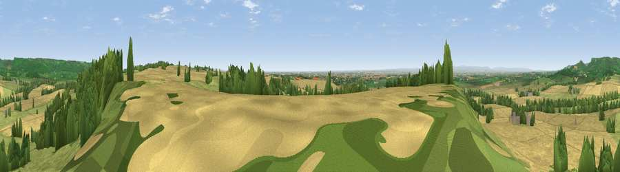

Viewpoint near Husthwaite
#5555 in England · top 15% of its area beats it · near HusthwaiteThe view, rendered

A 360° render of this exact spot computed from the terrain model, tree cover and land cover — summer colours, afternoon light, calibrated against photographs of famous viewpoints. Real trees, hedges and buildings will differ in detail.
The panorama
Grey silhouette: terrain skyline in each direction (720 bearings, Earth curvature and refraction included). Dashed green: skyline with trees (+15 m) and buildings (+8 m) as obstacles. Blue strip: how far the ground is visible on each bearing.
Where the view opens
Wedge length = distance to the farthest visible ground on that bearing (vegetation-aware). Rings at 10, 25 and 50 km.
What fills the view
47% cropland · 34% grassland · 19% woodland ·
Angular shares of the visible panorama (visual magnitude), not map area. Landscape diversity 0.47 (0–1 Shannon).
Key numbers
More beautiful places nearby
The staircase of upgrades: each row has a higher view potential than everything closer. Driving times are estimates from straight-line distance, calibrated against real road routing — check an actual route before setting out.
| Place | Direction | Drive | Score |
|---|---|---|---|
| Viewpoint near Oulston | ESE · 3 km | ~7 min | 70.4 |
| Snape Hill | NNW · 4 km | ~9 min | 71.8 |
| Viewpoint near Wass | NNE · 5 km | ~11 min | 72.6 |
| Viewpoint near Kilburn | NNW · 6 km | ~14 min | 79.3 |
| Hood Hill | NNW · 7 km | ~14 min | 79.6 |
| Viewpoint near Thirlby | NNW · 9 km | ~17 min | 81.5 |
| Beacon Hill | NNW · 25 km | ~41 min | 84.7 |
| Carlton Bank | N · 27 km | ~44 min | 85.1 |
54.17010, -1.19042 · source: screening · position refined by local search. Computed location — check access rights before visiting.